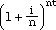
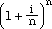
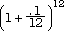

The annual version of the compound interest formula At = A0 (1 + r)t can have 2A0 substituted for At (because the amount doubles) and then solved for t as follows:
2A0 = A0 (1 + r)tIf the interest is, say 6%, this yields 11.89, which, since the question specifies annual interest, must be rounded to 12 years. Note that any growth factor At/A0 could be substituted for the number 2 in this discussion. Modula-2 code would be:
time := ( ln ( Amount / Principal ) / ln ( 1 + rate ) )
What is the effective annual rate for interest that is compounded more often than annually?
The idea here is that compounding more than annually produces a slightly higher rate of interest than if it were annual. Since many jurisdictions require a lender to report the rate as an annual one, an adjustment must be made.
The nominal interest rate is the rate that is divided by the number of annual compounding periods to obtain the rate per period. The effective annual interest rate is the rate that would be applied annually to produce the same result as the nominal rate.
For instance $1000 at a nominal 10% for one year compounded each six months yields (100 * .05) = $50, and then (1050 * .05) = $52.50 or 102.50 altogether. Clearly the effective annual rate is 10.25%.
In general, if the nominal rate is i, the number of compounding periods is n, and the effective rate is r, for the two to yield an equivalent amount in t years
A0 (1 + r)t = A0 
Multiplying both sides by 1/A0 and then taking tth roots yields
(1 + r) = 
or
r = - 1
Thus, if the investment (or loan) is of 10% compounded monthly, we would have
r =  -1
= .1047 or 10.47% for the effective rate.These new formulas, along with several others discussed in section 4.9 can be collected into a library, say, with the following definition:
DEFINITION MODULE FinanceMath; PROCEDURE SimpleInterest (principal, rate: REAL; time: CARDINAL) : REAL; (* Pre: none Post: computes interest= principal * rate * time *) PROCEDURE CompoundAmountA (principal, rate: REAL; time: CARDINAL) : REAL; (* Pre: none Post: computes A = principal (1 + rate)^time *) PROCEDURE CompoundAmount (principal, rate: REAL; time, numberPerYear: CARDINAL) : REAL; (* Pre: numberPerYear # 0 Post: computes A = principal (1 + rate/numberPerYear)^(time * numberPerYear) *) PROCEDURE EffectiveRate (nominalRate: REAL; numberPerYear: CARDINAL) : REAL; (* Pre: numberPerYear # 0 Post: computes r = (1 + nominalrate/numberPerYear)^numberPerYear - 1 *) PROCEDURE SCInterestFactor (interestPerPeriod: REAL; numberOfPeriods: CARDINAL) : REAL; (* Pre: interestPerPeriod # 0 Post: computes the series compound interest factor ((1 + i)^n - 1) *) PROCEDURE FutureValue (payment, interestPerPeriod: REAL; numberOfPeriods: CARDINAL) : REAL; (* Pre: interestPerPeriod # 0 Post: computes the future value of a payment by the formula payment * SCInterestFactor *) PROCEDURE SinkingFundFactor (interestPerPeriod: REAL; numberOfPeriods: CARDINAL) : REAL; (* Pre: interestPerPeriod # 0 Post: computes the sinking fund factor, which is the reciprocal of the series compound interest factor *) PROCEDURE AnnuitySize (amount, interestPerPeriod: REAL; numberOfPeriods: CARDINAL) : REAL; (* Pre: interestPerPeriod # 0 Post: computes the size of an annuity or payment for a total amount by the formula AnnuitySize = R = Amount * SinkingFundFactor *) PROCEDURE PWorthFactor (interestPerPeriod: REAL; numberOfPeriods: CARDINAL) : REAL; (* Pre: interestPerPeriod # 0 Post: Computes the series presentworthfactor as (1 - (1 + i)^-n)/i *) PROCEDURE PresentWorth (payment, interestPerPeriod: REAL; numberOfPeriods: CARDINAL): REAL; (* Pre: interestPerPeriod # 0 Post: Computes the present worth, which is the payment times present worth factor *) PROCEDURE CRFactor (interestPerPeriod: REAL; numberOfPeriods: CARDINAL) : REAL; (* Pre: interestPerPeriod # 0 Post: Computes the capital recovery factor, which is the reciprocal of the series present worth factor *) PROCEDURE AmortizePayment (amount, interestPerPeriod: REAL; numberOfPeriods: CARDINAL) : REAL; (* Pre: interestPerPeriod # 0 Post: Computes the payment to amortize an amount as amount * CRFactor *) END FinanceMath.
Implementation and testing of this library module is left as an exercise for the student.